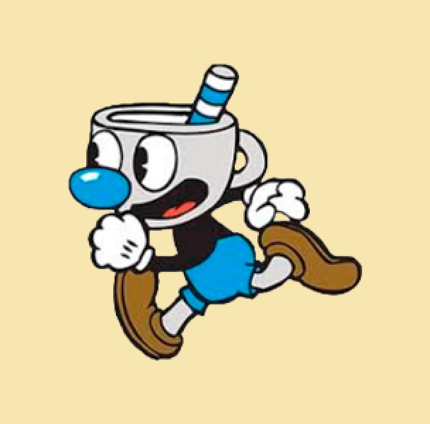

Mugman


Nell'aspetto generale, Mugman è molto simile al suo fratello gemello maggiore Cuphead: la sua testa ricorda una tazza e il suo corpo è quasi identico a quello del fratello. Indossa una maglia nera a maniche lunghe, guanti bianchi, un paio di pantaloncini e scarpe marroni, sebbene in alcune illustrazioni appaia con guanti gialli.
Torna alla pagina iniziale